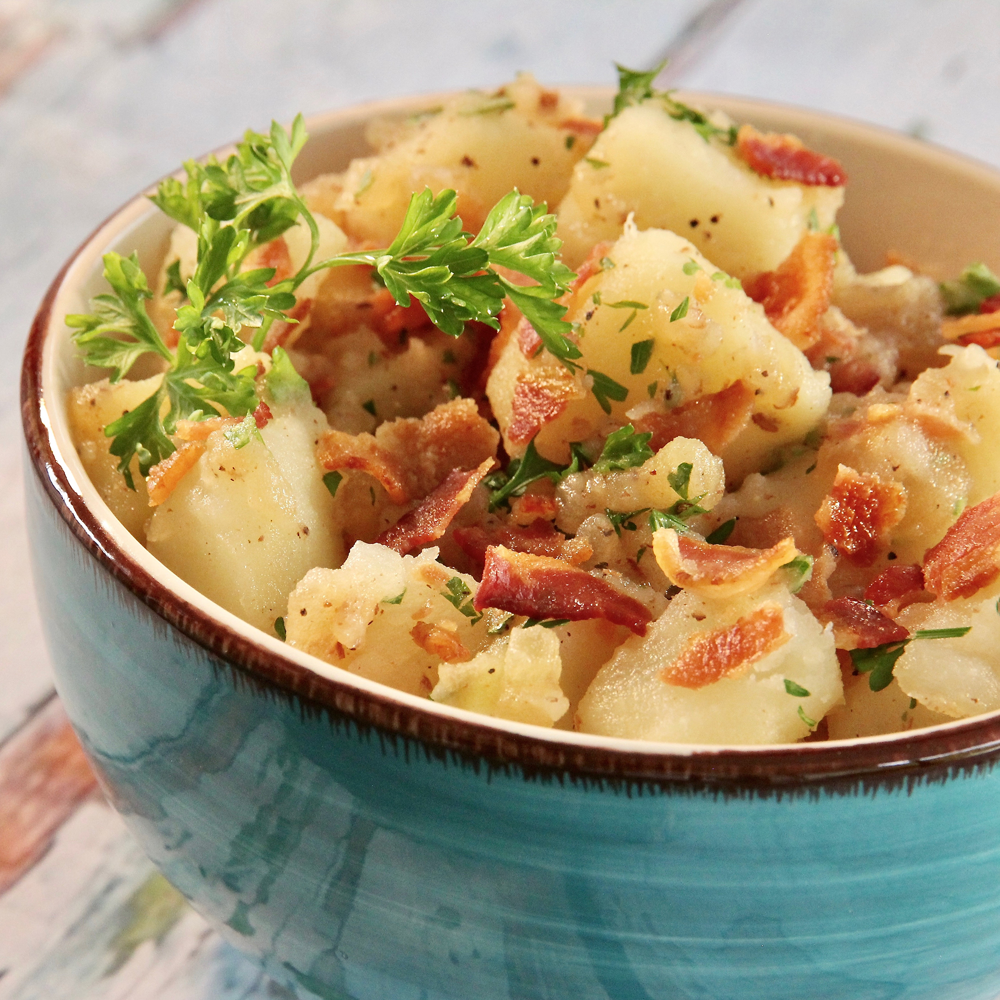

Delicious German Potato Salad

Description
This is a recipe for German potato salad found here. It is a delicious, German inspired,
recipe that has a great balace of salty and savory. It will be a hit as this weekend's BBQ for sure! Did I mention it has bacon?
Ingredients
- 3 cups diced peeled onions
- 4 slices bacon (or more if you would prefer!)
- 1 small onion, diced
- 1/4 cup of white vinegar
- 2 tablespoons water
- 3 tablespoons white sugar
- 1 teaspoon salt
- 1/8 teaspoon ground black pepper
- 1 tablespoon chopped fresh parsley
Steps
- Boil potatoes for 10 minutes, drain and let cool
- Cook bacon to crispy, or preferred texture. Save that grease!
- Add onion to the grease and cook until browned. Add the vinegar, water, sugar, salt and pepper to pan. Bring to a boil and add half of the bacon, in crumbles, and the other
remaining ingredients. Heat thouroghly, transfer to favorite serving dish, garnish with the rest of the bacon and ENJOY!!